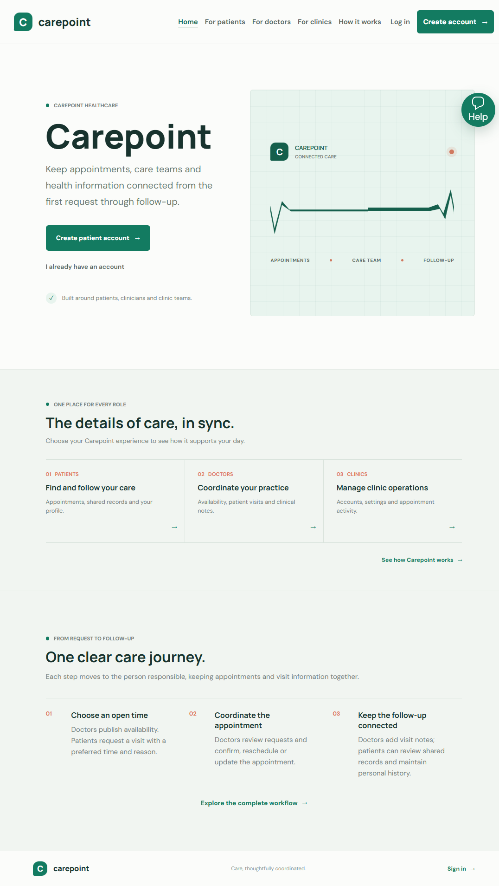
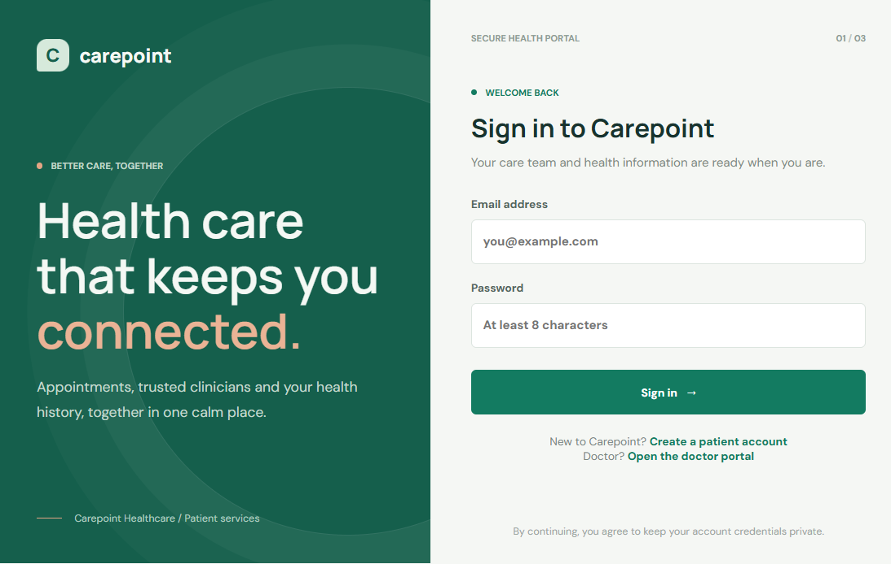
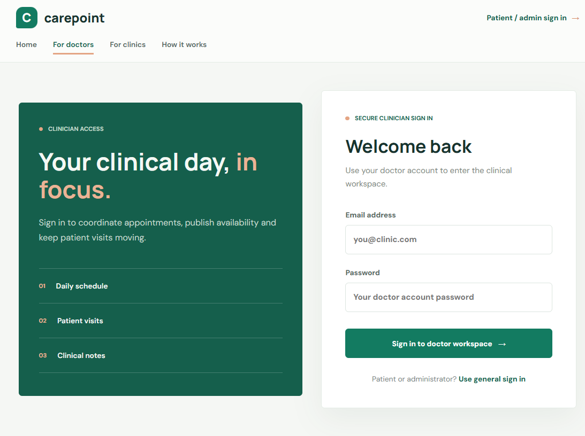
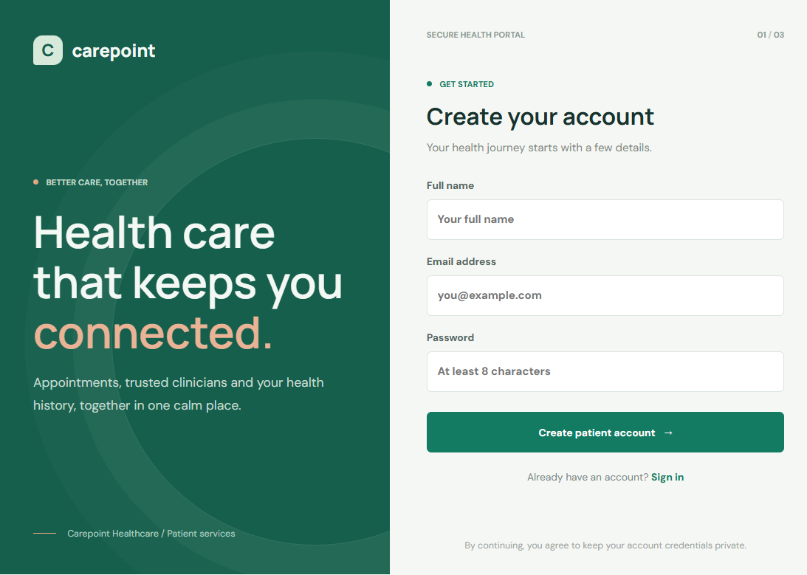
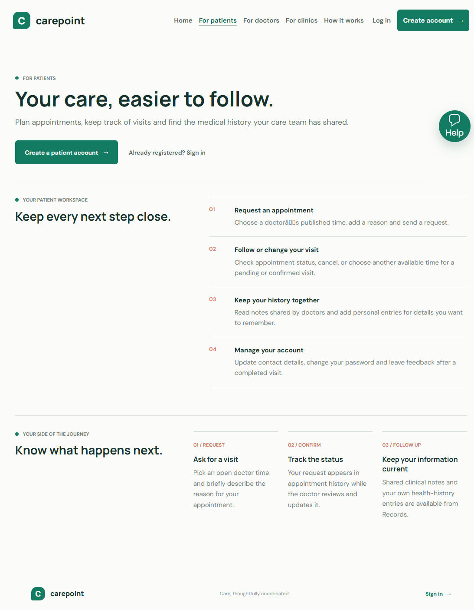
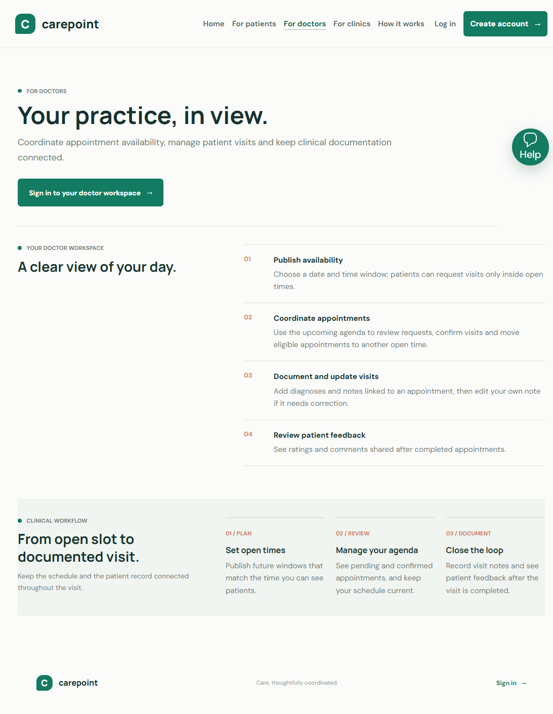
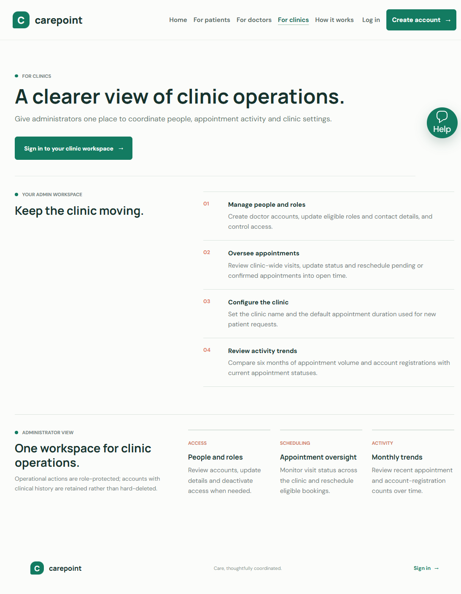
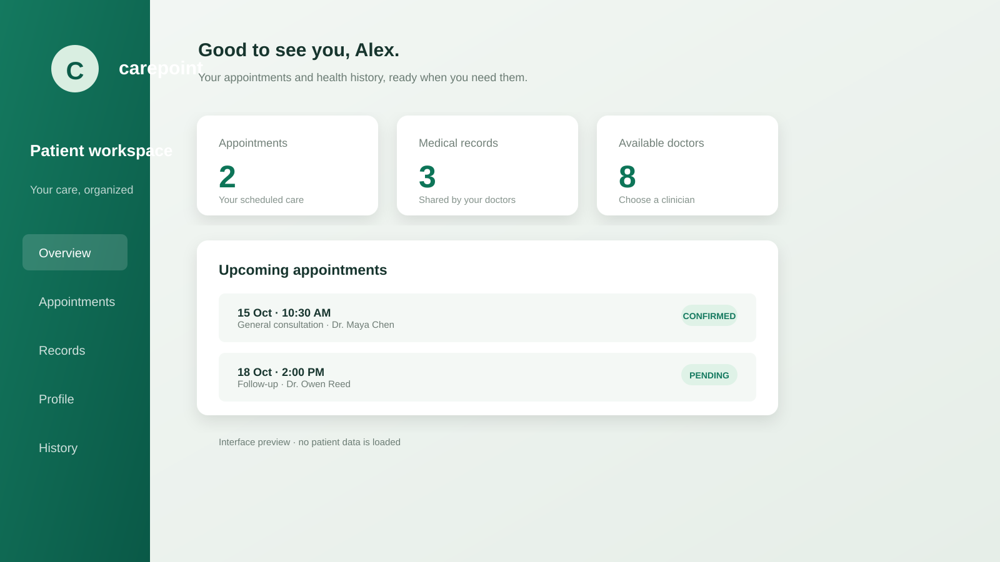
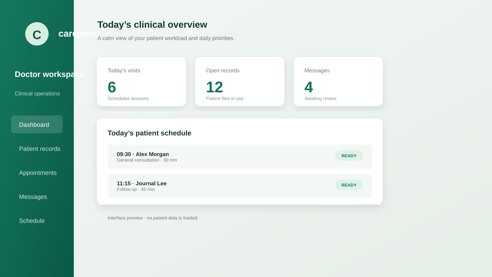
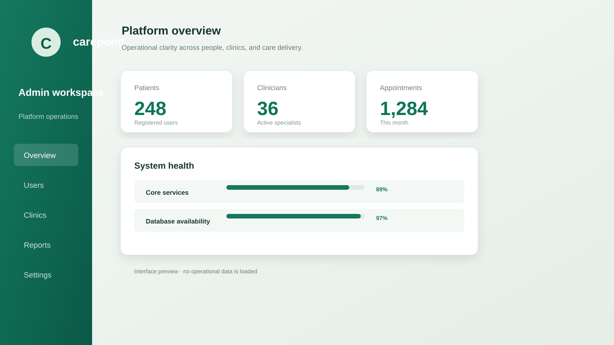

01
Patient
Manage personal care without losing track of the next step.
Book visitsView historyUpdate profileLeave feedback
A role-based web portal for appointment coordination, clinical notes and patient care.
Patients, clinicians and administrators each get tools designed around the work they need to do.
Manage personal care without losing track of the next step.
Coordinate availability and keep visit documentation connected to appointments.
Set up the clinic workspace and oversee scheduling activity.
Availability, slot validation and visit documentation keep scheduling tied to care delivery.
Doctor adds a future availability window.
Patient chooses a clinician, time and reason.
System checks the window and overlapping bookings.
Doctor confirms, completes or cancels the visit.
Doctor records a note; patient can review and rate the visit.
Servlets handle requests, repositories own JDBC operations, and JSP renders role-specific pages.
Responsive pages, forms and role-specific navigation. Views stay under WEB-INF.
Authentication, validation, authorization, workflow rules and request routing.
Prepared SQL statements, role-scoped queries and MySQL persistence.
Foreign keys keep appointments, clinical notes and feedback attached to the correct accounts.
database/schema.sql05Three roles have distinct dashboards and permitted actions.
Models, services, collections, validation and exception handling keep responsibilities explicit.
Prepared statements and repository classes connect Java operations to MySQL tables.
Servlet routes, session authentication, JSP views and a responsive interface.
Salted PBKDF2 hashes, session ID rotation, CSRF validation and role checks.
Modular Maven layout, schema script, setup README and focused unit tests.
database/schema.sqlmvn clean test packageThe landing page explains the value of the system and provides direct access to account creation and sign-in.

Each role receives a focused login experience, while the shared layer preserves secure account handling.



Patients can review upcoming appointments, access shared records, and move into schedule or profile actions.

Doctors can publish availability, review scheduled visits, record clinical notes and manage patient-facing follow-up.

Administrators can manage users, clinics, appointment activity, platform settings and operational reporting.

The application supports discovery, booking, clinical documentation, follow-up and feedback across the care team.



The application applies role checks, input validation, secure passwords, CSRF protection and repository-based data access.
Every protected route verifies the signed-in account’s role.
Passwords use salted PBKDF2 rather than plain-text storage.
Appointment, scheduling and profile data are checked before persistence.
State-changing requests require a valid session token.
Repository queries use placeholders and domain-focused methods.
Core password behavior is covered by JUnit tests.
The Maven project can be compiled and tested, then served locally with Jetty for demonstration.
mvn clean test package